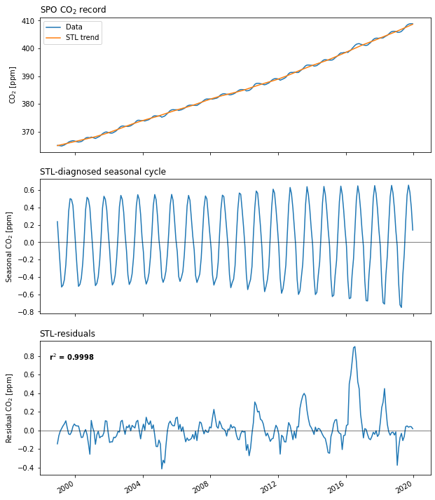
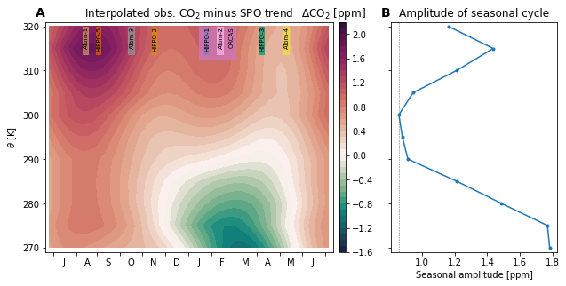

Seasonal amplitude of vertical gradient¶
Examine aircraft observations relative to deseasonalized record at South Pole Observatory (SPO).
%load_ext autoreload
%autoreload 2
import os
import numpy as np
import xarray as xr
xr.set_options(display_style='text')
import matplotlib.pyplot as plt
import matplotlib.gridspec as gridspec
import datasets
import emergent_constraint as ec
import figure_panels
import obs_aircraft
import obs_surface
import regression_models
import util
Compute trends at SPO¶
Apply the Seasonal-Trend decomposition using LOESS (STL) decomposition.
Load the observations and “simulated” observations.
da_srf = obs_surface.open_surface_co2_data('obs', 'CO2')
da_srf = da_srf.sel(record='SPO_NOAA_insitu_CO2')
da_srf
<xarray.DataArray 'CO2' (time: 255)>
array([365.087 , 365.0233 , 364.9477 , 364.8559 ,
365.0247 , 365.2323 , 365.5536 , 365.8787 ,
366.267 , 366.5252 , 366.6619 , 366.769 ,
366.6823 , 366.5256 , 366.3785 , 366.2866 ,
366.3605 , 366.4866 , 366.7825 , 367.2251 ,
367.7117 , 367.916 , 367.9165 , 367.8272 ,
368.082 , 367.90657444, 367.73680778, 367.5727 ,
367.8431 , 368.103 , 368.361 , 368.7956 ,
369.2895 , 369.62 , 369.8711 , 369.9044 ,
369.7054 , 369.5646 , 369.4809 , 369.5215 ,
369.7851 , 370.0466 , 370.4399 , 370.942 ,
371.4619 , 371.9008 , 372.0636 , 372.0244 ,
371.9033 , 371.9839 , 371.8845 , 371.9864 ,
372.1395 , 372.4602 , 372.8071 , 373.2333 ,
373.8026 , 374.1147 , 374.1257 , 374.017 ,
374.0089 , 374.0475 , 373.8567 , 374.0551 ,
374.1877 , 374.3905 , 374.7571 , 375.0748 ,
375.58 , 375.7441 , 375.7188 , 375.6784 ,
375.6514 , 375.6136 , 375.2336 , 375.435 ,
375.62 , 376.0597 , 376.5817 , 377.0944 ,
...
393.7438 , 394.0009 , 394.0185 , 393.9805 ,
393.9337 , 393.8893 , 393.64 , 393.6919 ,
393.8313 , 394.2192 , 394.5398 , 395.0099 ,
395.5185 , 395.87 , 395.9552 , 395.9001 ,
395.7913 , 395.7926 , 395.7917 , 395.8432 ,
396.1575 , 396.6362 , 397.0309 , 397.4532 ,
398.0054 , 398.3961 , 398.356 , 398.5408 ,
398.5384 , 398.679 , 398.5409 , 399.0028 ,
399.327 , 399.9535 , 400.5186 , 401.0858 ,
401.4933 , 401.6599 , 401.7256 , 401.5035 ,
401.3839 , 401.2491 , 401.1308 , 401.0807 ,
401.2104 , 401.6609 , 402.0518 , 402.6256 ,
403.2118 , 403.5453 , 403.7024 , 403.6678 ,
403.6577 , 403.8061 , 403.7602 , 403.7886 ,
404.1269 , 404.4542 , 404.7167 , 405.1911 ,
405.6863 , 406.0499 , 406.1676 , 406.1611 ,
406.1531 , 405.8242 , 405.8083 , 405.8894 ,
406.1281 , 406.642 , 407.1523 , 407.8425 ,
408.3913 , 408.716 , 408.8633 , 408.907 ,
408.8532 , nan, nan])
Coordinates:
* time (time) datetime64[ns] 1998-12-15 1999-01-15 ... 2020-02-14
year_frac (time) float64 1.999e+03 1.999e+03 ... 2.02e+03 2.02e+03
record <U19 'SPO_NOAA_insitu_CO2'
institution object 'NOAA'
lat float64 -89.98
lon float64 -24.8
stncode object 'SPO'
Attributes:
long_name: CO$_2$
units: ppmApply the STL decomposition.
spo_fit = regression_models.apply_stl_decomp(da_srf)
spo_fit
STL fit: r^2 = 0.9995
STL fit: r^2 = 0.6460
<xarray.Dataset>
Dimensions: (time: 253)
Coordinates:
* time (time) datetime64[ns] 1998-12-15 1999-01-15 ... 2019-12-15
Data variables:
observed (time) float64 365.1 365.0 364.9 364.9 ... 408.9 408.9 408.9
trend (time) float64 365.0 365.1 365.2 365.4 ... 408.2 408.5 408.7
seasonal (time) float64 0.2382 -0.03256 -0.2768 ... 0.5762 0.3978 0.141
resid (time) float64 -0.1452 -0.05815 -0.009257 ... 0.0387 0.01686
predicted (time) float64 365.2 365.1 365.0 364.8 ... 408.8 408.9 408.8
Attributes:
r2: 0.9998202309704811Visualize the STL components¶
fig, axs = plt.subplots(3, 1, figsize=(10, 12), squeeze=False,)
spo_fit.observed.plot(label='Data', ax=axs[0, 0])
spo_fit.trend.plot(label='STL trend', ax=axs[0, 0])
axs[0, 0].set_ylabel('CO$_2$ [ppm]')
axs[0, 0].set_xlabel('')
axs[0, 0].set_xticklabels([])
axs[0, 0].legend()
axs[0, 0].set_title('SPO CO$_2$ record', loc='left')
spo_fit.seasonal.plot(ax=axs[1, 0])
axs[1, 0].axhline(0, linewidth=0.5, color='k')
plt.title('Seasonal component of STL fit')
axs[1, 0].set_ylabel('Seasonal CO$_2$ [ppm]')
axs[1, 0].set_xlabel('')
axs[1, 0].set_xticklabels([])
axs[1, 0].set_title('STL-diagnosed seasonal cycle', loc='left')
spo_fit.resid.plot(ax=axs[2, 0])
axs[2, 0].axhline(0, linewidth=0.5, color='k')
axs[2, 0].set_ylabel('Residual CO$_2$ [ppm]')
axs[2, 0].set_xlabel('')
axs[2, 0].set_title('STL-residuals', loc='left')
ylm = np.array(axs[2, 0].get_ylim())
axs[2, 0].text(
axs[2, 0].get_xlim()[0]+200, ylm[1]-np.diff(ylm)*0.15,
f'r$^2$ = {spo_fit.r2:0.4f}',
fontweight='bold',
ha='left',
);

Aircraft profiles¶
dsets_prof = datasets.aircraft_profiles('obs')[['co2_med']]
dsets_prof
<xarray.Dataset>
Dimensions: (profile: 361, theta: 27)
Coordinates:
campaign (profile) <U32 'HIPPO-1' 'HIPPO-1' ... 'ORCAS-F' 'ORCAS-F'
doy (profile) float64 20.0 20.0 20.0 20.0 20.0 ... 56.0 56.0 0.0 0.0
flight_id (profile) <U32 'HIPPO-001-007' ... 'ORCAS-001-019'
lat (profile) float64 -44.73 -46.5 -49.75 ... -54.85 -51.65 -45.44
lon (profile) float64 170.4 169.6 170.1 ... -68.29 -72.46 -76.02
month (profile) float64 1.0 1.0 1.0 1.0 1.0 1.0 ... 2.0 2.0 2.0 2.0 2.0
* profile (profile) <U17 'HIPPO-001-007-074' ... 'ORCAS-001-019-207'
* theta (theta) float64 270.0 275.0 280.0 285.0 ... 390.0 395.0 400.0
time (profile) datetime64[ns] 2009-01-20 2009-01-20 ... 2016-02-29
year (profile) float64 2.009e+03 2.009e+03 ... 2.016e+03 2.016e+03
Data variables:
co2_med (profile, theta) float64 nan nan nan nan nan ... nan nan nan nanspo_trend = xr.DataArray(
np.interp(dsets_prof.time, spo_fit.time, spo_fit.trend),
dims=('profile'),
)
dco2 = dsets_prof.co2_med - spo_trend
dco2
<xarray.DataArray (profile: 361, theta: 27)>
array([[nan, nan, nan, ..., nan, nan, nan],
[nan, nan, nan, ..., nan, nan, nan],
[nan, nan, nan, ..., nan, nan, nan],
...,
[nan, nan, nan, ..., nan, nan, nan],
[nan, nan, nan, ..., nan, nan, nan],
[nan, nan, nan, ..., nan, nan, nan]])
Coordinates:
* profile (profile) object 'HIPPO-001-007-074' ... 'ORCAS-001-019-207'
campaign (profile) <U32 'HIPPO-1' 'HIPPO-1' ... 'ORCAS-F' 'ORCAS-F'
doy (profile) float64 20.0 20.0 20.0 20.0 20.0 ... 56.0 56.0 0.0 0.0
flight_id (profile) <U32 'HIPPO-001-007' ... 'ORCAS-001-019'
lat (profile) float64 -44.73 -46.5 -49.75 ... -54.85 -51.65 -45.44
lon (profile) float64 170.4 169.6 170.1 ... -68.29 -72.46 -76.02
month (profile) float64 1.0 1.0 1.0 1.0 1.0 1.0 ... 2.0 2.0 2.0 2.0 2.0
* theta (theta) float64 270.0 275.0 280.0 285.0 ... 390.0 395.0 400.0
time (profile) datetime64[ns] 2009-01-20 2009-01-20 ... 2016-02-29
year (profile) float64 2.009e+03 2.009e+03 ... 2.016e+03 2.016e+03Seasonal amplitude in the column¶
Use a harmonic function to estimate seasonal amplitude.
xhat = np.arange(-5, 365+5, 1)
yhat = xr.DataArray(np.ones((len(dco2.theta), len(xhat)))*np.nan,
dims=('theta', 'doy'),
coords=dict(
theta=dco2.theta,
doy=xhat,
),
)
doy = dco2.doy.values
for k in range(len(dco2.theta)):
x, y = util.antyear_daily(doy, dco2.isel(theta=k).values)
missing = np.isnan(x) | np.isnan(y)
if np.sum(~missing) < 5:
continue
p, pcov = ec.curve_fit(
ec.harmonic,
xdata=x[~missing]/365.25,
ydata=y[~missing],
)
yhat.data[k, :] = ec.harmonic(xhat/365.25, *p)
seasonal_amplitude = (yhat.max('doy') - yhat.min('doy'))
yhat.plot()
/glade/work/mclong/miniconda3/envs/so-co2/lib/python3.7/site-packages/scipy/optimize/minpack.py:834: OptimizeWarning: Covariance of the parameters could not be estimated
category=OptimizeWarning)
<matplotlib.collections.QuadMesh at 0x2b0a91513c90>
Hovmöller visualization¶
campaign_info = obs_aircraft.get_campaign_info(verbose=False, lump_orcas=True)
fig = plt.figure(figsize=(8, 4)) #dpi=300)
c_spec = figure_panels.marker_spec_campaigns(lump_orcas=True)
txt_box_props = dict(boxstyle='square,pad=0', facecolor='none', edgecolor='none')
# set up plot grid
gs = gridspec.GridSpec(
nrows=1, ncols=4,
width_ratios=[0.65, 0.015, 0.075, 0.375],
left=0., right=1.,
bottom=0.05, top=0.95,
hspace=0.25, wspace=0.05,
)
axs = np.empty((1, 2)).astype(object)
axs[0, 0] = plt.subplot(gs[0, 0])
cax = plt.subplot(gs[0, 1])
axs[0, 1] = plt.subplot(gs[0, 3])
ax = axs[0, 0]
pc = ax.contourf(
yhat.doy,
yhat.theta.sel(theta=slice(None, 320)),
yhat.sel(theta=slice(None, 320)),
levels=figure_panels.levels,
norm=figure_panels.divnorm,
cmap=figure_panels.cmap,
)
for c, info in campaign_info.items():
tb = util.day_of_year(info['time_bound'])
x, _ = util.antyear_daily(tb, np.ones(2))
ax.axvspan(
x[0], x[1],
ymin=0.84 if c == 'ORCAS' else 0.86,
ymax=0.98,
color=c_spec[c]['color'],
alpha=1 if c in ['HIPPO-1', 'ATOM-2'] else 0.75,
)
xtxt = x.mean() + np.diff(x)*0.18
if c == 'ORCAS':
xtxt += 10
ax.text(
xtxt, 320., c,
rotation=90,
ha='center',
verticalalignment='top',
color='k',
fontsize=7,
bbox=txt_box_props,
)
ax.set_ylim((269., 321.))
ax.set_title('Interpolated obs: CO$_2$ minus SPO trend')
cb = plt.colorbar(pc, cax=cax)
cb.ax.set_title('$\Delta$CO$_2$ [ppm] ', loc='center')
ax.set_ylabel('$\\theta$ [K]')
ax.set_xlim((-10, 375))
ax.set_xticks(figure_panels.bomday)
ax.set_xticklabels([f' {m}' for m in figure_panels.monlabs_ant]+['']);
ax = axs[0, 1]
ax.plot(
seasonal_amplitude.sel(theta=slice(None, 320)),
yhat.theta.sel(theta=slice(None, 320)),
'.-', label='Seasonal amplitude')
ax.set_yticklabels([]);
ax.set_xlabel('Seasonal amplitude [ppm]')
ax.axvline(seasonal_amplitude.sel(theta=300.), lw=0.5, c='dimgray', linestyle='--')
ax.set_ylim((269., 321.))
ax.set_title('Amplitude of seasonal cycle')
util.label_plots(fig, [ax for ax in axs.ravel()], xoff=-0.02)
util.savefig('seasonal-amplitude')
